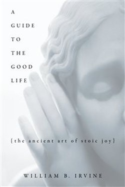
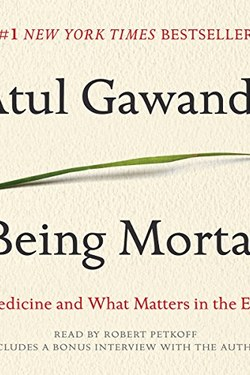
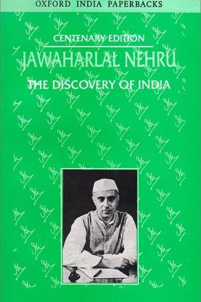
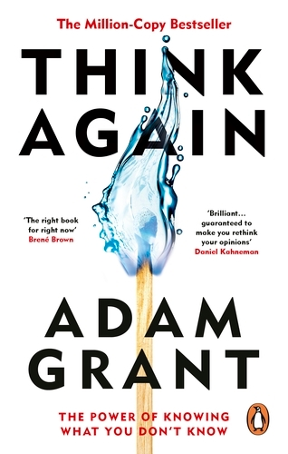
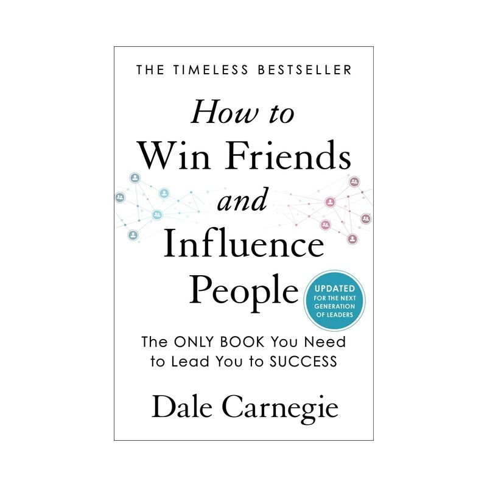
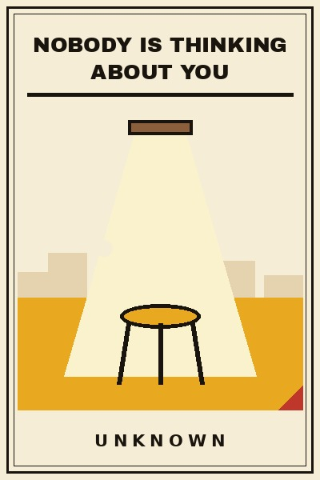
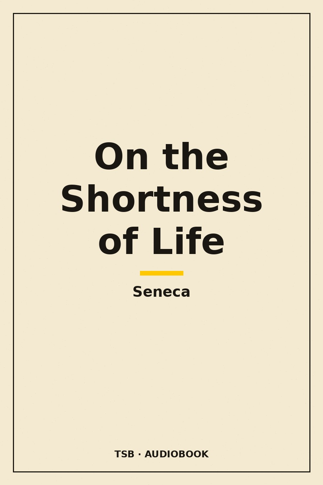

Library › Books like Meditations
10 Books Like Meditations That Hit the Same Nerve
You finished Meditations by Marcus Aurelius and want the same energy: You have power over your mind - not outside events. Realize this, and you will find strength.… Here are 10 more that scratch the same itch, each with a free chapter-by-chapter breakdown, key lessons and action steps on this shelf.

A Guide to the Good Life Irvine's modern Stoicism: aim at tranquillity, not happiness, and rehearse loss to love the present. READ THE FREE BREAKDOWN →
Being Mortal The goal of care is not only to add years to life but life to years: Gawande's manifesto on mortality and dignity. READ THE FREE BREAKDOWN →
The Discovery of India Nehru's sweeping love letter to India - its ancient wisdom, its invasions, its syncretism, and the long argument about what it means to be Indian. READ THE FREE BREAKDOWN →
Think Again Intelligence is the ability to think; wisdom is the ability to RETHINK. Be the scientist, not the preacher, prosecutor, or politician. READ THE FREE BREAKDOWN → Blink
Gladwell's exploration of thin-slicing: the instant judgments your unconscious makes in two seconds are often brilliant - and sometimes dangerously wrong.
READ THE FREE BREAKDOWN →
Blink
Gladwell's exploration of thin-slicing: the instant judgments your unconscious makes in two seconds are often brilliant - and sometimes dangerously wrong.
READ THE FREE BREAKDOWN →
 Grit
Talent × effort = skill. Skill × effort = achievement. Effort counts twice - and grit, not genius, predicts who finishes.
READ THE FREE BREAKDOWN →
Grit
Talent × effort = skill. Skill × effort = achievement. Effort counts twice - and grit, not genius, predicts who finishes.
READ THE FREE BREAKDOWN →

How to Win Friends & Influence People You can make more friends in two months by becoming interested in other people than in two years trying to get people interested in you. READ THE FREE BREAKDOWN →
Nobody Is Thinking About You You rehearse the message four times before sending. You replay the meeting comment for three days. Here is the releasing news: nobody is thinking about you. READ THE FREE BREAKDOWN →
On the Shortness of Life You are not given a short life; you are given a life, and you squander it - Seneca's timeless indictment. READ THE FREE BREAKDOWN →Every summary is free: lessons, examples, action steps, audio in your language.